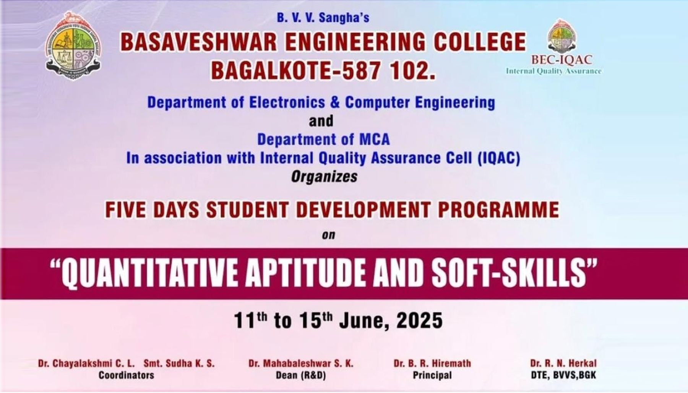

Events & Activities
Workshops, seminars, fests, and more

SDP June 11, 2025
Quantitative Aptitude and Soft Skills
A five-day programme on analytical, problem-solving and communication skills, organised with the MCA department and IQAC.
 SDP
SDP
September 20, 2025
Advanced C Programming
A five-day student development programme designed to strengthen programming and problem-solving skills through practical learning.
 SDP
SDP
November 14, 2025
Building Yourself to Be a Successful Engineer
WISE session at Basaveshwar Engineering College, Bagalkot.